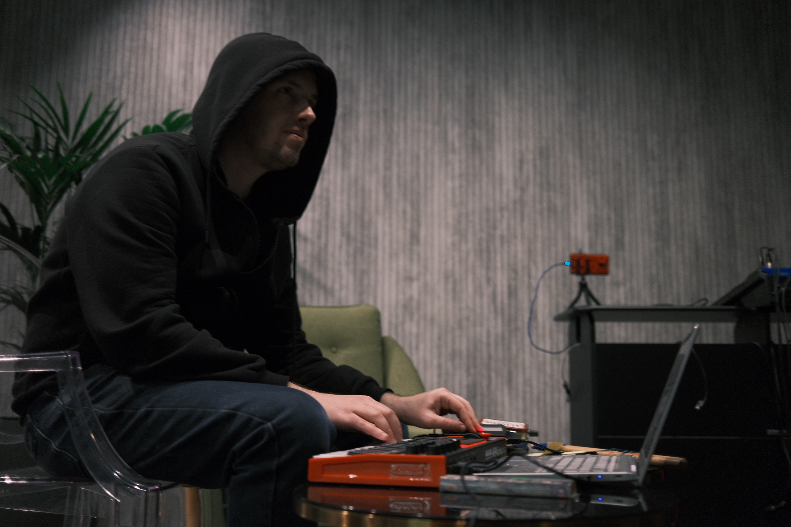
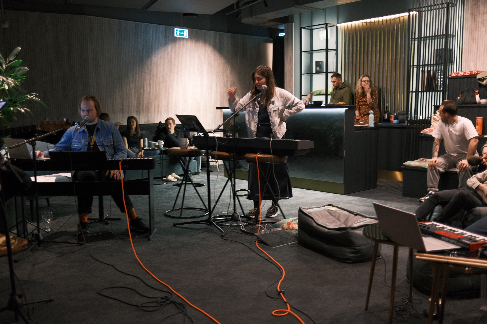
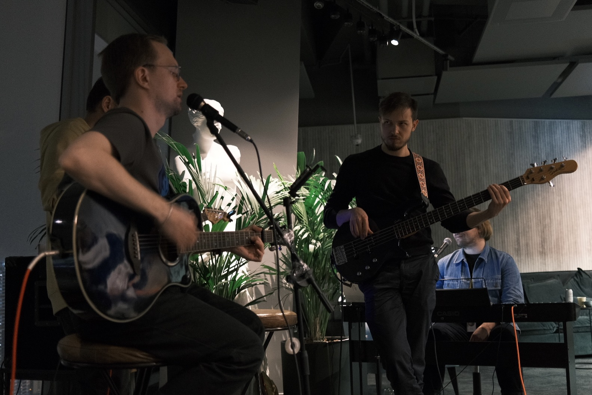
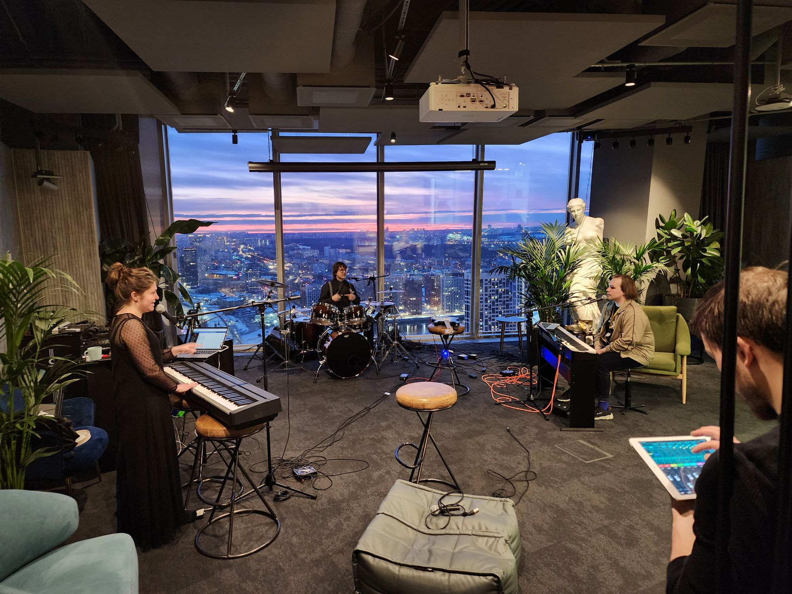
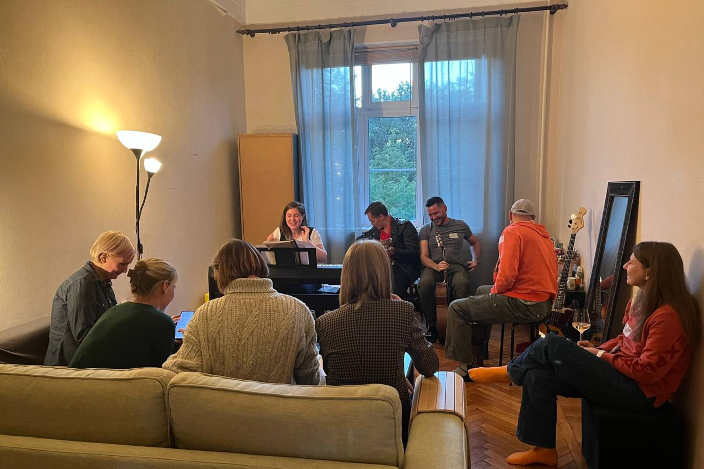
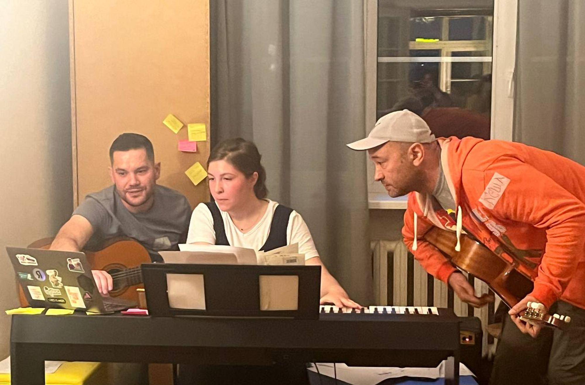

?? мая 2026 · Москва · БЦ Лотте Плаза
Домашний концерт
в офисе Яндекса.
Квартирник у Маши Боруха — это вечер, когда офис превращается в гостиную: хаус-бэнд, гитара по кругу, чак-чак, разговоры до ночи. Без билетов, по-доброму, по приглашению.
Узнать про следующий → Что было раньше



01 / Что это вообще
Маленький
домашний концерт
с большим звуком.
Раз в несколько месяцев мы собираемся вечером в офисе ОКО, приносим инструменты, настраиваем звук и играем песни, которые любим — от Radiohead до Алсу.
Это не корпоратив и не open-mic. Это что-то между джемом и вечеринкой у друзей, когда из угла слышно «а можешь подыграть?» и через минуту играют все. Маша собирает, Саша строит звук, Лебедев зовёт музыкантов, Андрей поёт за всех.
«Пирожочки, без которых квартирник не случился бы.»
02 / Кадры
Из прошлых вечеров
Несколько фото — больше в архиве.




03 / Поучаствовать
Хочется играть, петь, помогать?
Мы регулярно ищем людей: барабанщика в хаус-бэнд, звукорежиссёра, фотографа, мастера трансляций, проектного менеджера.
Поддержать донатом
Квартирник бесплатный. Донаты идут на аренду пультов, шнуры, стойки и доставку. Имена доноров — на странице команды.